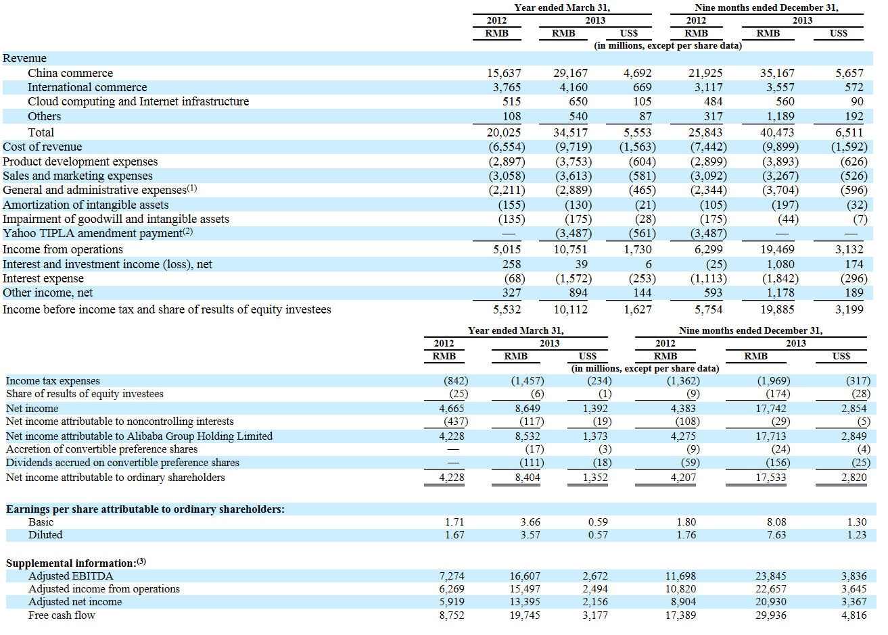

返回主页
Summary Consolidated Statements of Operations Data:

(1) In the nine months ended December 31, 2013, these expenses included an equity-settled donation expense of RMB1,269 million (US$204 million) relating to the grant of options to purchase 50,000,000 of our ordinary shares to a non-profit organization designated by Jack Ma and Joe Tsai.
(2) We entered into the Technology and Intellectual Property Licensing Agreement with Yahoo, or the Yahoo TIPLA, in October 2005, pursuant to which we pay royalty fees to Yahoo. We and Yahoo amended the existing TIPLA in September 2012, pursuant to which we made a lump sum payment in the amount of US$550 million, which is reflected as US$561 million in the convenience translation in the table above as a result of the change in the Renminbi to U.S. dollar exchange rate since the date of payment.
(3) See “― Non-GAAP Measures” below.
Non-GAAP Measures
We use the non-GAAP financial measures of adjusted EBITDA, adjusted income from operations, adjusted net income and free cash flow in evaluating our operating results and for financial and operational decision-making purposes.
We believe that adjusted EBITDA, adjusted income from operations and adjusted net income help identify underlying trends in our business that could otherwise be distorted by the effect of the expenses that we exclude in adjusted EBITDA, adjusted income from operations and adjusted net income. We believe that adjusted EBITDA, adjusted income from operations and adjusted net income provide useful information about our operating results, enhance the overall understanding of our past performance and future prospects and allow for greater visibility with respect to key metrics used by our management in its financial and operational decision-making.
We consider free cash flow to be a liquidity measure that provides useful information to management and investors about the amount of cash generated by our business that can be used for strategic corporate transactions, including investing in our new business initiatives, making strategic investments and acquisitions and strengthening our balance sheet. We use free cash flow to manage our business, make planning decisions, evaluate our performance and allocate resources. A limitation of the utility of free cash flow as a measure of financial performance is that it does not represent the total increase or decrease in our cash balance for a reporting period.
Adjusted EBITDA, adjusted income from operations, adjusted net income and free cash flow should not be considered in isolation or construed as an alternative to net income, cash flows or any other measure of performance or as an indicator of our operating performance. Adjusted EBITDA, adjusted income from operations, adjusted net income and free cash flow presented here may not be comparable to similarly titled measures presented by other companies. Other companies may calculate similarly titled measures differently, limiting their usefulness as comparative measures to our data.
Adjusted EBITDA represents income from operations (which excludes interest and investment income (loss), net, interest expense, other income, net, income tax expenses and share of results of equity investees) before (i) certain non-cash expenses, consisting of share-based compensation expense, amortization of intangible assets, depreciation and impairment of goodwill and intangible assets as well as (ii) one-time expense items consisting of the Yahoo TIPLA amendment payment and an equity-settled donation expense that we do not believe are reflective of our core operating performance during the period presented.
Adjusted income from operations represents income from operations (which excludes interest income and investment income (loss), net, interest expense, other income, net, income tax expenses and share of results of equity investees) before share-based compensation expense, one-time expense items consisting of the Yahoo TIPLA amendment payment and an equity-settled donation expense that we do not believe are reflective of our core operating performance during the period presented.
Adjusted net income represents net income before share-based compensation expense, one-time expense items consisting of the Yahoo TIPLA amendment payment, as well as an equity-settled donation expense.
Free cash flow represents net cash provided by operating activities as presented in our consolidated cash flow statement less purchases of property and equipment (excluding acquisition of land use rights for, and construction of, our office campuses in China) and intangible assets, adjusted for changes in loan receivables relating to micro loans of our SME loan business and the Yahoo TIPLA amendment payment. We present the adjustment for changes in loan receivables because such receivables are reflected under cash flow from operating activities, whereas the secured borrowings and other bank borrowings used to finance them are reflected under cash flows from financing activities, and accordingly, the adjustment is made to show cash flows from operating activities net of the effect of changes in loan receivables.
version:1.0; jobnet@188.com © retter2012.com